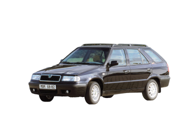

Historie modelu



V pondělí 17. října 1994 odstartovala sériová výroba modelu ŠKODA FELICIA
První nově vyvinutý automobil ŠKODA od začlenění značky do koncernu Volkswagen
V období 1994 - 2001 vyrobila ŠKODA AUTO celkem 1 401 489 vozů řady FELICIA
Mladá Boleslav, 15. října 2019 – Před 25 lety, 17. října 1994, se v Mladé Boleslavi rozeběhla sériová výroba modelu ŠKODA FELICIA. Nástupce řady byl prvním modelem ŠKODA vyvinutým po vstupu koncernu Volkswagen do tradiční české automobilky. Sbíral triumfy na sportovním poli a významně zabodoval u zákazníků: do roku 2001 vzniklo v závodech Mladá Boleslav, Kvasiny a Vrchlabí celkem více než 1,4 milionu vozů ŠKODA FELICIA, včetně verzí FELICIA COMBI, PICKUP, VANPLUS a FUN.
ŠKODA FELICIA se před čtvrt stoletím stala významným milníkem v historii české značky. Ta od svého začlenění do koncernu Volkswagen v roce 1991 průběžně zlepšovala užitnou i estetickou úroveň stávající modelové řady FAVORIT, FORMAN a PICK-UP, razantní krok vpřed ale učinila právě představením modelu FELICIA. Ten vznikl komplexní evolucí předchůdce s využitím 1187 nových dílů. ŠKODA FELICIA ve verzích hatchback, kombi, pick-up, Vanplus a Fun nabídla moderní techniku i design, velký vnitřní prostor a atraktivní poměr cena/užitná hodnota.
Produkce pěti desítek prototypů odstartovala 5. září 1994 v závodě Vrchlabí, po optimalizaci technologie následoval oficiální start v pondělí 17. října v hlavní mladoboleslavské výrobní lince. První sériová ŠKODA FELICIA z ní sjela přesně v 10:20 hodin. O devět dní později, 26. října 1994, se trojice nových hatchbacků v barvě české trikolóry představila veřejnosti. Tehdejší pražský primátor je na Karlově mostě pokřtil vodou z Vltavy.
Typové označení řady FELICIA odkazovalo na ikonický otevřený vůz z přelomu 50. a 60. let i na latinský výraz pro pocit štěstí: felicitas. I proto jeden z prvních vozů věnovala společnost ŠKODA AUTO rodině Ondráčkových, kterým se tehdy narodila čtyřčata.
Základní pětidveřový hatchback FELICIA byl o 40 mm delší a 15 mm širší než předchůdce FAVORIT, objem prostoru pro zavazadla se zvětšil o 21 litrů a FELICIA nabídla posádce ještě vzdušnější kabinu. Vysokou bezpečnostní úroveň nového vozu ŠKODA potvrdila v roce 1995 nárazová bariérová zkouška, provedená institutem TÜV. Celková úroveň odhlučnění a odpružení vozu se zvýšila díky pevnému skeletu samonosné karoserie, nové nápravnici a změněné geometrii přední nápravy a přidanému stabilizátoru zadní nápravy. Vysoké kvalitativní standardy při výrobě i montáži garantoval mezinárodní certifikát ISO 9002. Jako první jej v automobilce ŠKODA získala motorárna.
Základní pohonnou jednotkou modelu ŠKODA FELICIA se stal zážehový motor o objemu 1289 cm3, ve výkonových variantách 40 kW a 50 kW. V průběhu roku 1995 nabídku rozšířil výkonnější benzinový čtyřválec 1.6 MPI/55 kW a naftová jednotka 1.9 D/47 kW.
V červnu 1995 přibyla k základním hatchbackům ještě prostornější verze FELICIA COMBI, od srpna 1995 vznikala v závodě Kvasiny také provedení PICKUP a FELICIA Vanplus. Čtyři tisícovky vozů pro volný čas ŠKODA FELICIA Fun zaujaly nejen žlutým odstínem karoserie, ale i variabilním uspořádáním interiéru (šlo o 2+2místný pick-up). O popularitě lehkých užitkových vozidel ŠKODA svědčí také fakt, že v období 1996 – 2000 vzniklo takřka 19 000 kusů s alternativním označením Volkswagen Caddy, úspěšně exportovaných například na latinskoamerické trhy.
Řada FELICIA obohatila nabídku značky ŠKODA o moderní prvky výbavy, jako ABS, postupně až čtyři airbagy, klimatizaci, posilovač řízení, výškově nastavitelná a vyhřívaná přední sedadla, čalounění kvalitní kůží nebo palubní počítač. Stoletému výročí založení firmy (1895/1995) vzdala hold luxusní edice FELICIA Laurin & Klement. Rodinu FELICIA zatraktivnily též oblíbené akční modely s vynikajícím poměrem mezi nabízenou výbavou, vzhledem a cenou. Například na počest Letních olympijských her 1996 vznikl model Atlanta.
ŠKODA FELICIA potvrdila svoji všestrannost také významnými úspěchy na poli motoristického sportu. V rallyovém mistrovství světa působila v období 1995–1997. Již během první sezony vybojovala FELICIA Kit Car třetí místo ve své třídě, roku 1996 dojel Švéd Stiq Blomqvist v anglické RAC Rally třetí v absolutní klasifikaci. V soutěžním Mistrovství světa roku 1997 byla značka ŠKODA druhá ve třídě, poté na úspěchy řady FELICIA Kit Car navázala nová OCTAVIA Kit car a v sezóně 1999 OCTAVIA WRC.
V únoru 1998 osvěžil vzhled řady FELICIA velký facelift, navenek patrný hlavně sjednocením designového jazyka širokého sortimentu značky ŠKODA. Tvar předních světlometů i masky chladiče již připomínal větší model OCTAVIA. V červnu 2001 se působivá kariéra automobilů ŠKODA FELICIA úspěšně završila, celkem vzniklo 1 401 489 exemplářů. Následníkem se stal mimořádně zdařilý model ŠKODA FABIA, vyráběný od roku 1999.
Motory
modelová řada Felicia dostala již kromě benzínových motorů vlastního vývoje, ještě benzínový motor 1,6i z vývoje VW. A také ještě první dieslový motor 1,9D taktež z mateřského koncernu VW
Škoda Felicia
| typ motoru |
roky výroby |
výkon |
| 1,3 | 1994 - 2001 | 40KW |
| 1,3 | 1994 - 2001 | 43KW |
| 1,3 | 1994 - 2001 | 50KW |
| 1,6 | 1995 - 2001 | 55KW |
| 1,9D | 1995 - 2001 | 47KW |
Škoda Felicia combi
| typ motoru |
roky výroby |
výkon |
| 1,3 | 1994 - 1998 | 40KW |
| 1,3 | 1994 - 1998 | 43KW |
| 1,3 | 1994 - 2001 | 50KW |
| 1,6 | 1995 - 2001 | 55KW |
| 1,9D | 1995 - 2001 | 47KW |
Skoda pickuup / Fun
| typ motoru |
roky výroby |
výkon |
| 1,3 | 1997 - 2002 | 40KW |
| 1,3 | 1997 - 2002 | 50KW |
| 1,6 | 1997 - 2002 | 55KW |
| 1,9D | 1997 - 2002 | 47KW |
recenze